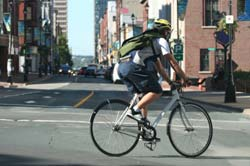

Bicycles make great "green" transportation. Riding a bike produces no pollution, consumes no fossil fuel, and even helps you stay in shape. As an added bonus, bikes get some of the best parking places on the planet. (That's because you can park your bike almost anywhere. Yes, it's a dream come true!)
And if you're looking for basic transportation, a secondhand bicycle can be a smart choice. While you could pay hundreds of dollars for a high-quality new bike, you can get a great used bicycle for $30 or $40, and if you're lucky, for much less money - maybe even for free.
Previously owned bicycles are relatively easy to find, so don't take the first one you see. Instead, try these tips for finding a bike that's reliable and inexpensive:
Keep your eyes open. A few good places to look for secondhand bikes are Craigslist, thrift stores, police auctions, garage sales and Freecycle - roughly in that order. In particular, college towns are great sources for quality secondhand bikes because so many students have bicycles.
Research the brand. Some bikes are built so cheaply, they're really intended to be replaced rather than repaired. How can you tell? The easiest way is to spend a few minutes researching the brand online whenever you find a promising bike. Not only does this quick research help you avoid cheaply made bikes, you may also identify unbelievable deals. Many secondhand bicycles are sold at prices much lower than what they're worth.
Look for major problems. Some bike problems can be repaired, others can't. In general, the main thing you want to avoid is bent metal. Look to be sure the frame, forks and wheels are all in good shape. A little rust isn't a major concern, especially if it's just on the chain, but you can use it to bargain for a better price.
Consider your needs. If the bike is for basic road transportation, you don't need a mountain bike, and you probably won't want one - a bike with studded-style tires will just take more energy to pedal.
If you live in a relatively flat location, a three-speed or cruiser bike can be a lot of fun. If not, you'll definitely want something with a few more gears.
Be sure to choose a bike that's the right size so that it rides comfortably. If you're not sure, a bike shop can easily help you figure out what size you need.
Now make it road worthy. Once you've purchased a bike, it's a good idea to take it to a bike shop for a tune-up. It's inexpensive and they can let you know if there's anything seriously wrong with the bike - the brakes, for example. You'll also want to pick up any basic biking equipment you don't already have.
The main things you'll need are a lock and a helmet. Also check into lights for night riding, and a basket or panniers to give you some storage space. (You can easily make your own panniers, or even build a bike trailer to haul larger items. Either of these can make it much easier to use your bike for errands.)
You should also definitely consider fenders if the bike doesn't already have them. They're inexpensive, and they keep you from getting sprayed with all the mud and grit that get tossed up by the wheels.
Check out more bike resources. If you're going to ride often, you might want to learn how to do a few bike repairs yourself. A good basic book to get started is Zinn and the Art of Mountain Bike Maintenance. Another good resource to check out for all things related to bikes is www.bikeforums.net.
|
 Istock Photo/Mike Clarke Forget gas, go green and get a bike. You'll save money, reduce your carbon footprint, get in shape, zip through traffic and get great parking spots. |
|
|